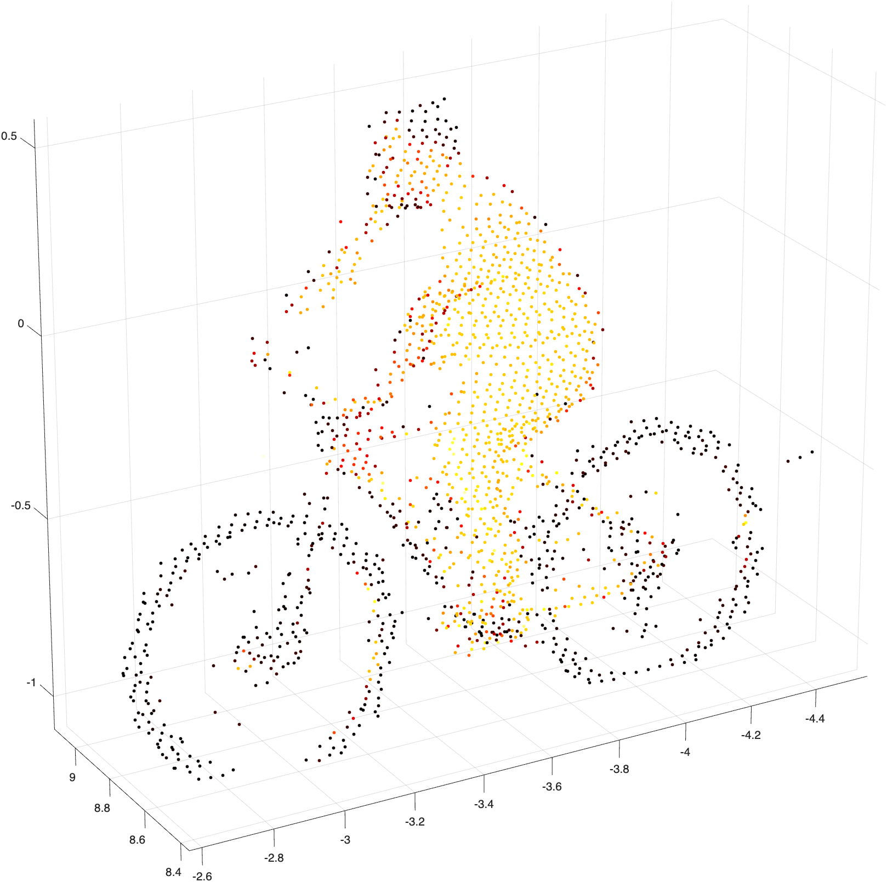
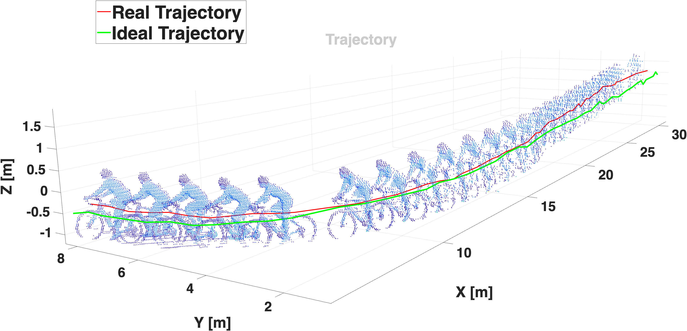

Acquisizione dei dati
In questa fase iniziale, un sensore LiDAR RoboSense Ruby Plus raccoglie dati grezzi dall'ambiente sotto forma di nuvole di punti (point cloud) 3D. Il corretto posizionamento del sensore è critico per inquadrare la geometria del ciclista ed evitare occlusioni.

Pre-elaborazione
I dati vengono "puliti" per alleggerire il carico computazionale. Le operazioni includono:
- ROI: Limitazione dell'area di interesse.
- Ground Removal: Rimozione dei punti del terreno.
- Voxel-grid: Downsampling spaziale per una geometria più stabile.

Inferenza (Deep Learning)
Utilizzo del modello SECOND (Sparsely Embedded Convolutional Detection). Il sistema trasforma i dati strutturali in informazioni semantiche, restituendo per ogni oggetto:
- ✓ Bounding Box 3D (Coordinate, dimensioni, orientamento).
- ✓ Label di classe (Ciclista).
- ✓ Score di confidenza.

Post-elaborazione
Raffinamento dei risultati tramite soglie di confidenza e filtraggio delle classi non pertinenti. I bounding box vengono re-intersecati con la nuvola di punti grezza per estrarre con massima precisione i soli punti appartenenti all'utente e alla bicicletta.

Analisi e Indicatori
Conversione dei dati geometrici in indicatori quantitativi:
- Traiettoria: Mapping del percorso nel tempo.
- Dinamica: Velocità media, massima e distanza euclidea.
- Angolo di inclinazione: Stima del piano della bici rispetto al suolo.
- Classificazione: Uso di SVM e Random Forest per distinguere MTB da Bici da corsa.
